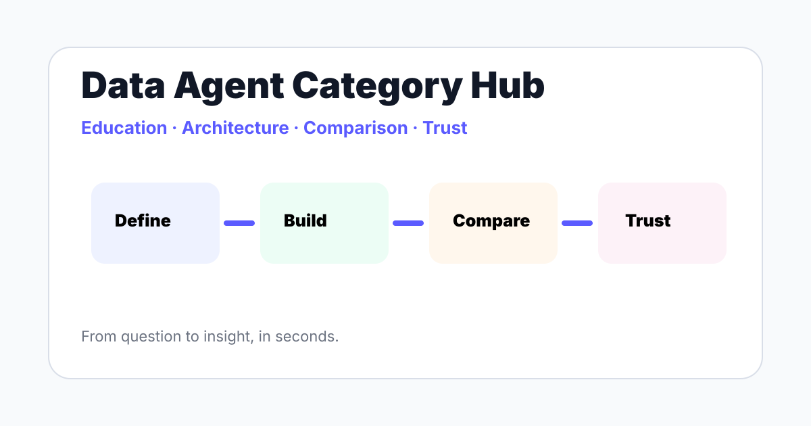

A curated path through InfiniSynapse guides on data agents, AI data analysts, agentic analytics, autonomous workflows, memory layers, and explainable AI data analysis.

The data agent manifesto argues that analytics should move from static dashboards and ticket queues to reviewable agents that plan, retrieve context, execut...
A data agent is an AI system that completes data work by planning analysis steps, retrieving business context, executing queries or tool actions, checking o...
An AI-native data platform is built around language-model workflows, context retrieval, governed execution, and reviewable outputs from the start. It differ...
Agentic analytics is an analytics approach where an AI agent plans analysis steps, retrieves context, executes data tasks, validates outputs, and explains t...
An autonomous data agent is an AI system that can run scoped parts of a data workflow with limited human steering. In analytics, safe autonomy means permiss...
An AI data analyst is software that helps complete analysis work from a business question to a reviewable result. It can clarify intent, retrieve definition...
An AI data analyst job description should combine analytics fundamentals with AI workflow skills. The role includes defining business questions, validating ...
AI agent memory for data is the governed context layer that helps a data agent remember business definitions, schema notes, prior analyses, user preferences...
The difference between a data agent and an AI copilot is workflow ownership. A copilot assists a user inside an existing task, while a data agent plans, exe...
AI-native vs augmented analytics is a difference in architecture. Augmented analytics adds AI to BI workflows for preparation, insight generation, and expla...
Explainable AI data analysis means the system can show the sources, assumptions, queries, transformations, checks, and limitations behind an answer. For ana...
This data agent glossary defines the terms analytics teams need when evaluating agentic systems: data agent, AI data analyst, agentic analytics, memory laye...
| Layer | Reader question | Best page |
|---|---|---|
| Definition | What is this category? | What Is a Data Agent |
| Architecture | What makes the system AI-native? | AI-Native Data Platform |
| Trust | Can we audit the result? | Explainable AI Data Analysis |
Use these guides to define your criteria, then test InfiniSynapse with a real business question.
Try InfiniSynapse onlineReviewed every 90 days for canonical consistency, source availability, product positioning, and internal link coverage.